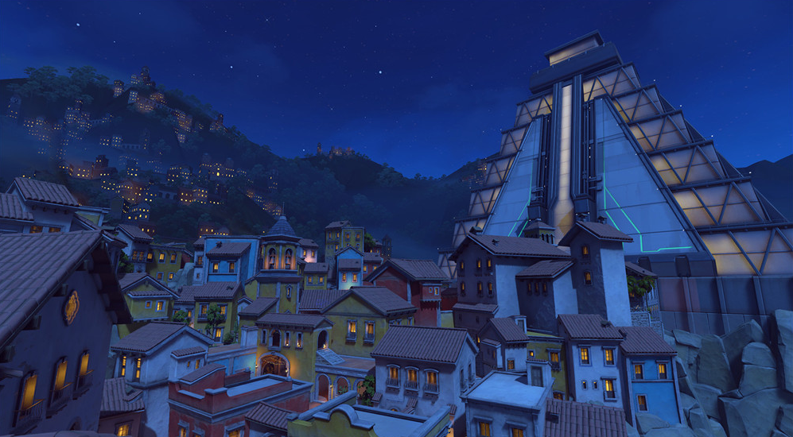
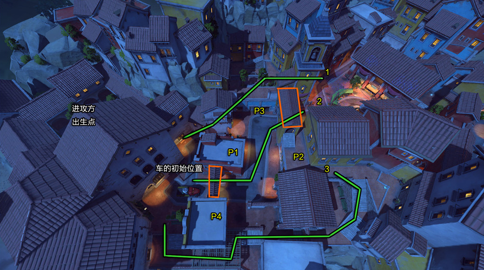
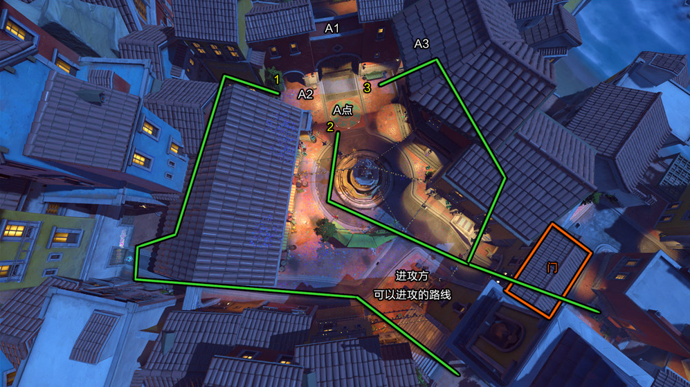
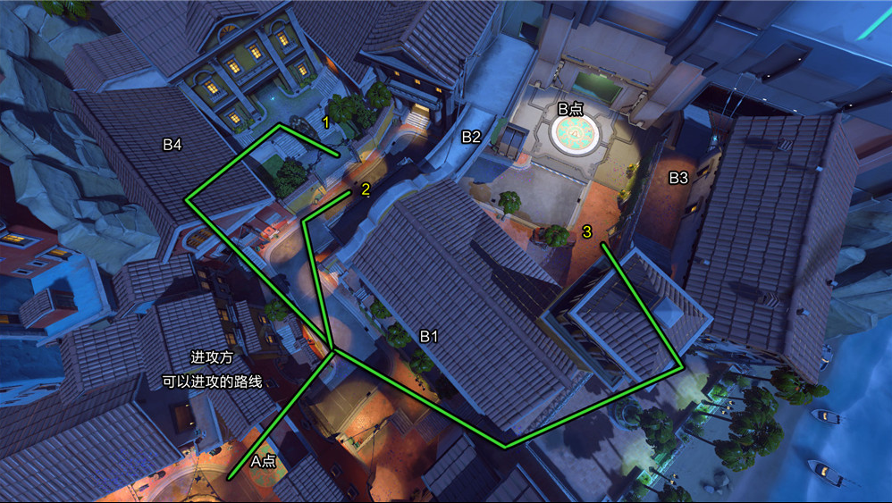

介绍：进攻方出生在小镇右上的小屋里，防守方出生在地图左边的的小屋里。这张图属于单纯的护送车辆图，进攻方护送车辆到达目标点1后，剩余时间会刷新，重生点会变动到目标点1右下不远的小屋子里，具体位置如下图所示。此时防守方重生点变动，重生点变成地图左侧靠里的位置(深入科技大楼内部)。当进攻方护送车辆到达目标点2点后，剩余时间会刷新，重生点会变动到目标点2左下不远的小屋子里，具体位置如下图所示。此时防守方重生点变动，重生点变成地图左侧更加靠里的位置(如第二张图地图所示)。当进攻方护送车辆到达目标点3点后便获得胜利，同样的，防守方如能坚持防守目标点3到时间走完，防守方便获得胜利。地图整体比较简单，路线也很明确。
   